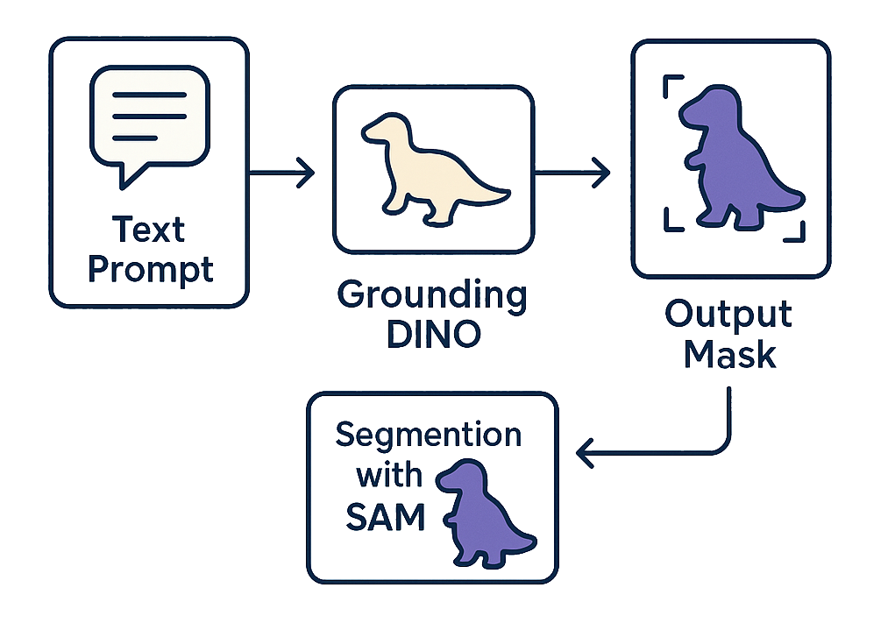
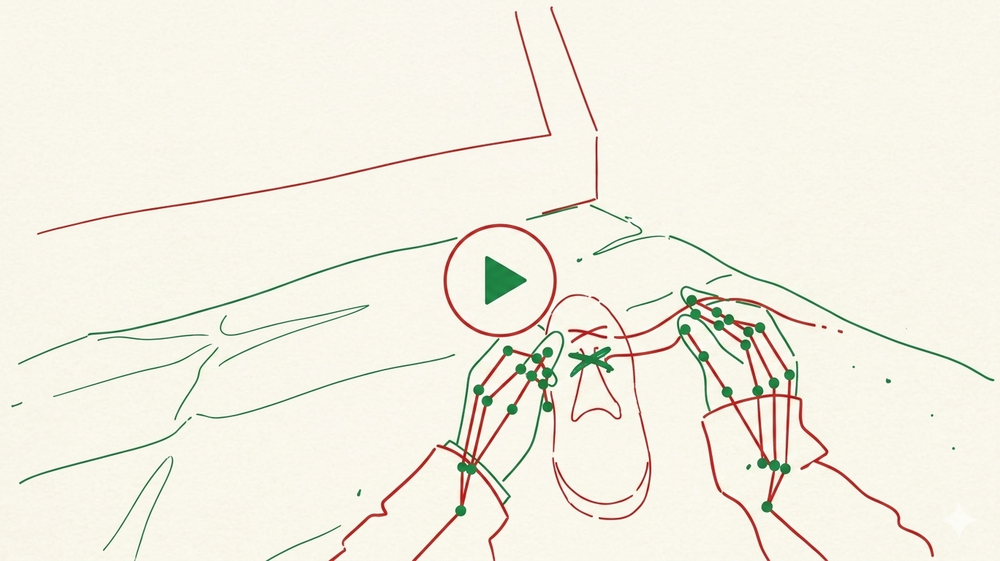
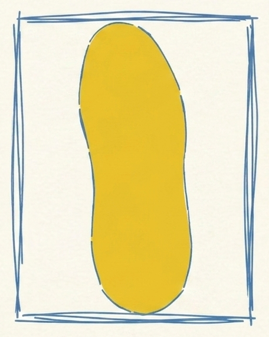
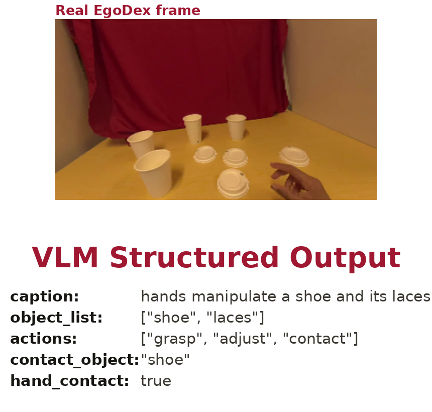
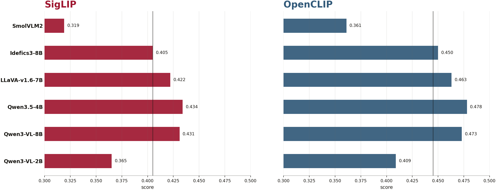
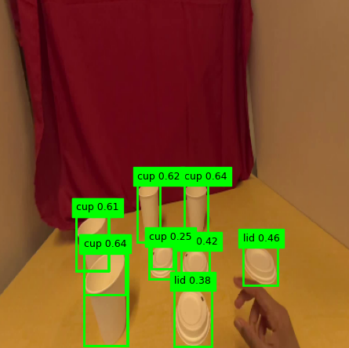
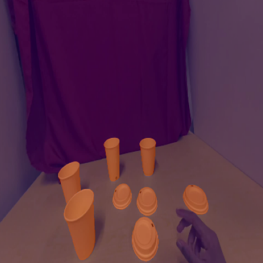

caption: shoe handling
objects: shoe, laces
query: shoe


["shoe", "laces"]

| Metric | ≥ 0.25 | ≥ 0.35 |
|---|---|---|
| Window detection rate | 97.3% | 91.6% |
| Frame detection rate | 95.7% | 86.7% |
| Mask window rate | 97.3% | 91.6% |
captions.jsonl
tags.jsonl
embeddings.npy
manifest.jsondetections.jsonl
masks.jsonl
progress.json
manifest.json